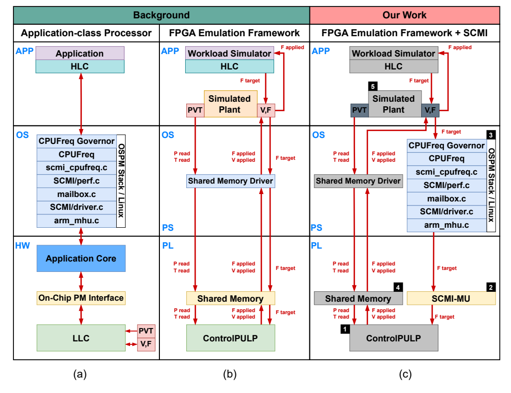
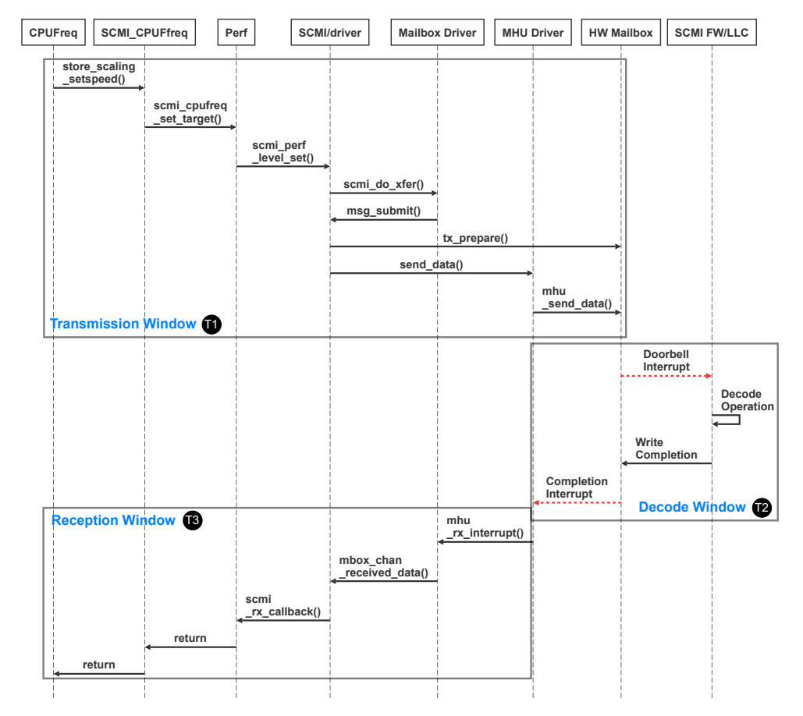
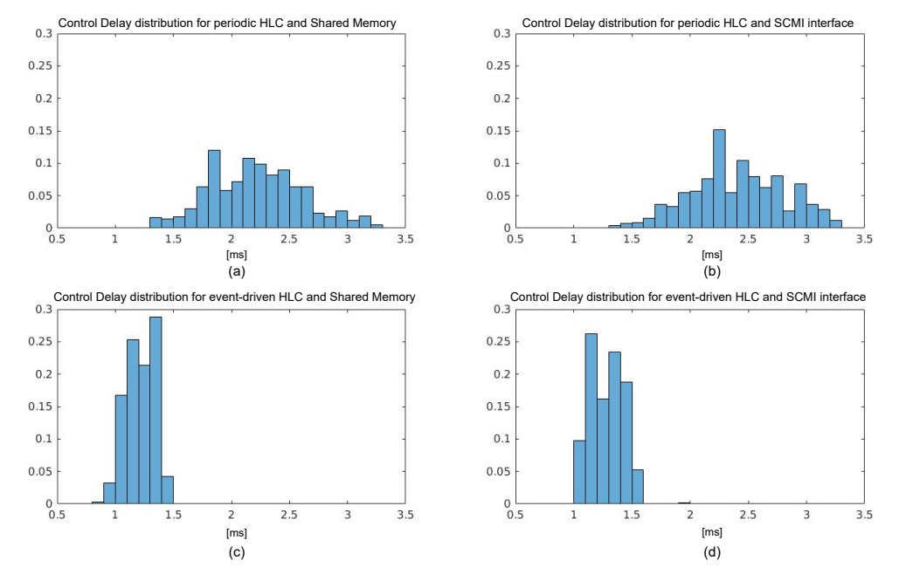
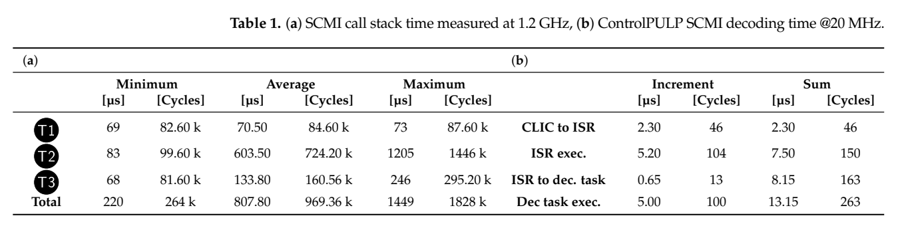
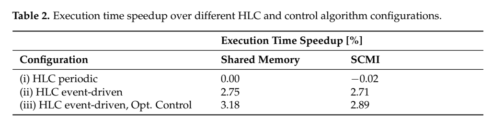

SCMI端到端时延：原图原表阅读索引#
整理日期：2026-11-05。读者原创中文解读；原图归论文作者／出版方。未运行作者实验，不是独立复现。
覆盖范围： 本版本正文中识别到的6项图、表或算法；保留原编号。关键项已裁图并在技术精读相应段落出现，未内嵌的项可点PDF页链接查看，不上传整篇PDF。
统计总边界： 通信有分布和最小／平均／最大值，不能只拿70.5µs代表完整链。无拥塞1s发包与密集突发命令是不同工况，未覆盖就不能保证突发响应。模拟阶段模式固定、50%占空比，不能代表全部CPU应用。论文摘要约3%的能效改善，在主结果中应优先引用Table2明确的执行时间指标，不能自行扩成所有真实任务节能3%。
Fig1：真实部件与HIL映射#


- 本项回答的问题： 真实部件与HIL映射，用于支撑这条方法或实验链中的具体环节。
- 组成、坐标和对照： 分清高层Linux、底层固件、模拟CPU。 结构／流程类没有统一数值坐标；箭头表示数据或控制关系，不表示统计因果。 颜色按原图图例辨认，不能把同色跨图视为同一组。
- 阅读顺序与统计单位： 先看设定、单位和图例，再看趋势与作者正文。重复次数及采样独立性参见本篇技术精读统计节；没有为该图定位到的误差线定义／独立重复数，不另行猜测。
- 直接观察： 接口与plant的真实程度不同。
- 作者解释的范围： 原文以该图／表作为上述观察的结构说明或实验支撑，需连同对应页正文读取；本索引不额外替作者推导因果机制。
- 独立判断（AI分析）： 不能统称真实CPU节能实测。
- 证据链位置： 方法／系统实现说明。它支持本文具体条件下的实现或结果，不单独完成跨平台验证。
- 结论与强度： 可复述“接口与plant的真实程度不同。”；对图内描述的核查可信度高，对未做独立实验的泛化判断为中或无法判断。不能得出的结论是“不能统称真实CPU节能实测。”所排除的外推。
Fig2：SCMI调用时序#


- 本项回答的问题： SCMI调用时序，用于支撑这条方法或实验链中的具体环节。
- 组成、坐标和对照： 自上而下读调用，左右区分Linux与固件，定位T1/T2/T3。 按原图／表标示的单位与归一化基准阅读；不将不同子图或不同分母的柱高直接相除。 颜色按原图图例辨认，不能把同色跨图视为同一组。
- 阅读顺序与统计单位： 先看设定、单位和图例，再看趋势与作者正文。重复次数及采样独立性参见本篇技术精读统计节；没有为该图定位到的误差线定义／独立重复数，不另行猜测。
- 直接观察： 长等待不都在传输硬件。
- 作者解释的范围： 原文以该图／表作为上述观察的结构说明或实验支撑，需连同对应页正文读取；本索引不额外替作者推导因果机制。
- 独立判断（AI分析）： 无拥塞时序不保证高请求吞吐。
- 证据链位置： 性能验证／定量或示例证据，需结合实验条件。它支持本文具体条件下的实现或结果，不单独完成跨平台验证。
- 结论与强度： 可复述“长等待不都在传输硬件。”；对图内描述的核查可信度高，对未做独立实验的泛化判断为中或无法判断。不能得出的结论是“无拥塞时序不保证高请求吞吐。”所排除的外推。
Fig3：三窗口延迟分布#
- 本项回答的问题： 三窗口延迟分布，用于支撑这条方法或实验链中的具体环节。
- 组成、坐标和对照： 按子图看分布宽度和单位。 按原图／表标示的单位与归一化基准阅读；不将不同子图或不同分母的柱高直接相除。 颜色按原图图例辨认，不能把同色跨图视为同一组。
- 阅读顺序与统计单位： 先看设定、单位和图例，再看趋势与作者正文。重复次数及采样独立性参见本篇技术精读统计节；没有为该图定位到的误差线定义／独立重复数，不另行猜测。
- 直接观察： T2波动大于T1。
- 作者解释的范围： 原文以该图／表作为上述观察的结构说明或实验支撑，需连同对应页正文读取；本索引不额外替作者推导因果机制。
- 独立判断（AI分析）： 没有分布尾部完整数据不能给硬上界。
- 证据链位置： 性能验证／定量或示例证据，需结合实验条件。它支持本文具体条件下的实现或结果，不单独完成跨平台验证。
- 结论与强度： 可复述“T2波动大于T1。”；对图内描述的核查可信度高，对未做独立实验的泛化判断为中或无法判断。不能得出的结论是“没有分布尾部完整数据不能给硬上界。”所排除的外推。
Fig4：控制延迟分布#


- 本项回答的问题： 控制延迟分布，用于支撑这条方法或实验链中的具体环节。
- 组成、坐标和对照： 先分周期／事件，再分共享内存／SCMI。 按原图／表标示的单位与归一化基准阅读；不将不同子图或不同分母的柱高直接相除。 颜色按原图图例辨认，不能把同色跨图视为同一组。
- 阅读顺序与统计单位： 先看设定、单位和图例，再看趋势与作者正文。重复次数及采样独立性参见本篇技术精读统计节；没有为该图定位到的误差线定义／独立重复数，不另行猜测。
- 直接观察： 策略周期影响比邮箱本身更明显。
- 作者解释的范围： 原文以该图／表作为上述观察的结构说明或实验支撑，需连同对应页正文读取；本索引不额外替作者推导因果机制。
- 独立判断（AI分析）： 114µs是优化降频子情形，不是这些分布统一均值。
- 证据链位置： 性能验证／定量或示例证据，需结合实验条件。它支持本文具体条件下的实现或结果，不单独完成跨平台验证。
- 结论与强度： 可复述“策略周期影响比邮箱本身更明显。”；对图内描述的核查可信度高，对未做独立实验的泛化判断为中或无法判断。不能得出的结论是“114µs是优化降频子情形，不是这些分布统一均值。”所排除的外推。
Table1：通信与解码统计#


- 本项回答的问题： 通信与解码统计，用于支撑这条方法或实验链中的具体环节。
- 组成、坐标和对照： 分别看(a)µs与(b)周期及频率。 按原图／表标示的单位与归一化基准阅读；不将不同子图或不同分母的柱高直接相除。 颜色按原图图例辨认，不能把同色跨图视为同一组。
- 阅读顺序与统计单位： 先看设定、单位和图例，再看趋势与作者正文。重复次数及采样独立性参见本篇技术精读统计节；没有为该图定位到的误差线定义／独立重复数，不另行猜测。
- 直接观察： 发送、返回和解码差异大。
- 作者解释的范围： 原文以该图／表作为上述观察的结构说明或实验支撑，需连同对应页正文读取；本索引不额外替作者推导因果机制。
- 独立判断（AI分析）： 别把两种时钟域周期直接相加。
- 证据链位置： 性能验证／定量或示例证据，需结合实验条件。它支持本文具体条件下的实现或结果，不单独完成跨平台验证。
- 结论与强度： 可复述“发送、返回和解码差异大。”；对图内描述的核查可信度高，对未做独立实验的泛化判断为中或无法判断。不能得出的结论是“别把两种时钟域周期直接相加。”所排除的外推。
Table2：应用性能改善#


- 本项回答的问题： 应用性能改善，用于支撑这条方法或实验链中的具体环节。
- 组成、坐标和对照： 对照相同参考列和三种配置。 按原图／表标示的单位与归一化基准阅读；不将不同子图或不同分母的柱高直接相除。 颜色按原图图例辨认，不能把同色跨图视为同一组。
- 阅读顺序与统计单位： 先看设定、单位和图例，再看趋势与作者正文。重复次数及采样独立性参见本篇技术精读统计节；没有为该图定位到的误差线定义／独立重复数，不另行猜测。
- 直接观察： SCMI与理想通道差距较小。
- 作者解释的范围： 原文以该图／表作为上述观察的结构说明或实验支撑，需连同对应页正文读取；本索引不额外替作者推导因果机制。
- 独立判断（AI分析）： 2.89%属于模型应用，不能外推E902。
- 证据链位置： 性能验证／定量或示例证据，需结合实验条件。它支持本文具体条件下的实现或结果，不单独完成跨平台验证。
- 结论与强度： 可复述“SCMI与理想通道差距较小。”；对图内描述的核查可信度高，对未做独立实验的泛化判断为中或无法判断。不能得出的结论是“2.89%属于模型应用，不能外推E902。”所排除的外推。